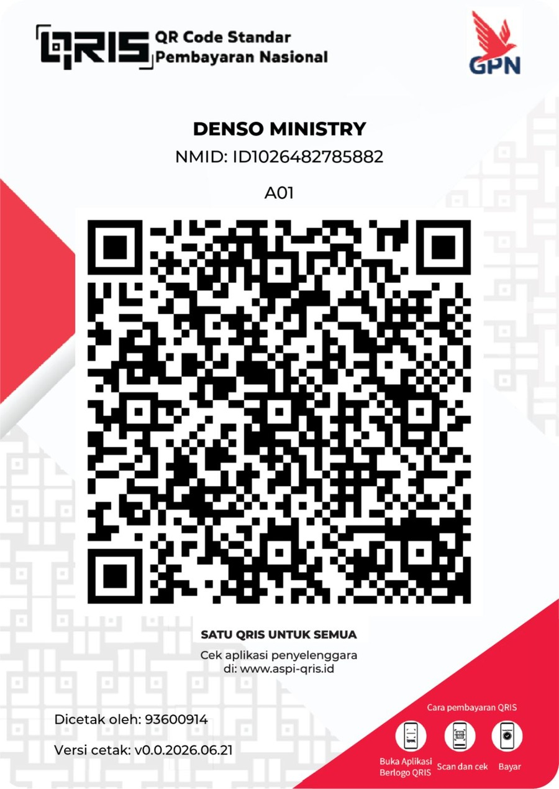

✠
✠
✝
Kebaktian Bersama
Ibadah Bersama
Denso Indonesia Group
MERAWAT PERSAUDARAAN SEJATI
Tema Ibadah| Jumat, 23 Oktober 2026 | Denso Indonesia Group |
Tema Ibadah
Merawat
Persaudaraan Sejati
Lebih Dari Pemenang · Umat Berdiri
Lebih dari pemenang
Dalam segala perkara
Iblis telah dikalahkan
Oleh kuasa darah-Nya
Jika Allah di pihak kita
Siapa dapat melawan
Kita lebih dari pemenang
Dalam segala perkara
Iblis telah dikalahkan
Oleh kuasa darah-Nya
Jika Allah di pihak kita
Siapa dapat melawan
Kita lebih dari pemenang
Lebih Dari Pemenang · Reff & Bridge
Haleluya
Kibarkanlah panjiNya
Yesus Raja segala Raja
Haleluya bangkitlah gerejaNya
Kita lebih, lebih dari pemenang
Kita lebih dari pemenang
Kita lebih dari pemenang
Kibarkanlah panjiNya
Yesus Raja segala Raja
Haleluya bangkitlah gerejaNya
Kita lebih, lebih dari pemenang
Kita lebih dari pemenang
Kita lebih dari pemenang
†
Doa Pembukaan
Worship Leader · Rio
Bapa, Engkau Mengenalku
Bapa, Engkau mengenalku
Lebih dari siapapun
Engkau tahu ceritaku
Sebelum ku mengatakannya
Di dalam luka dan duka
Engkau tetap dekat
Menuntun langkahku
Sampai akhir hidupku
Lebih dari siapapun
Engkau tahu ceritaku
Sebelum ku mengatakannya
Di dalam luka dan duka
Engkau tetap dekat
Menuntun langkahku
Sampai akhir hidupku
Sukacitaku
KasihMu yang terbesar
KasihMu segalanya
JanjiMu yang sempurna
Oh Kaulah sukacitaku
Bersuka dalamMu
Yesus Kau kekuatanku
Aman di dalamMu
Menara perlindunganku
KasihMu segalanya
JanjiMu yang sempurna
Oh Kaulah sukacitaku
Bersuka dalamMu
Yesus Kau kekuatanku
Aman di dalamMu
Menara perlindunganku
Sukacitaku · Reff
Menari bagiMu
Yesus Kau sukacitaku
Mulialah namaMu oh Yesusku
Mulialah namaMu
Kaulah sukacitaku
Mulialah namaMu oh Yesusku
Yesus Kau sukacitaku
Mulialah namaMu oh Yesusku
Mulialah namaMu
Kaulah sukacitaku
Mulialah namaMu oh Yesusku
Mengenal-Mu
Bila ku buka mataku dan lihat wajahmu
Ku terkagum
Bila ku lihat hidupku dan karya tanganmu
Ku tersanjung
Kar`na semua yang baik dalam hidupku
Itulah karyamu
Kau b`ri kesempatan yang baru
Ku terkagum
Bila ku lihat hidupku dan karya tanganmu
Ku tersanjung
Kar`na semua yang baik dalam hidupku
Itulah karyamu
Kau b`ri kesempatan yang baru
Mengenal-Mu · Reff
Dan ku ingin mengenalmu Tuhan
Lebih dalam dari s`mua yang ku kenal
Tiada kasih yang melebihimu
Ku ada untuk menjadi penyembahmu
Lebih dalam dari s`mua yang ku kenal
Tiada kasih yang melebihimu
Ku ada untuk menjadi penyembahmu
†
Pemberitaan Firman
Umat Duduk
- Doa Pembacaan Alkitab · Agustinus Reinard
- Pembacaan Alkitab · Matius 18:20 · Agustinus Reinard
- Renungan · Agustinus Reinard
Pembacaan Alkitab
Matius 18:20
Agustinus Reinard
Berkenan Bagi-Mu
Pulihkan, pulihkan
Hatiku dengan kasih-Mu
Bentuklah, bentuklah
Hatiku jadi s'perti-Mu
Kekudusan-Mu memenuhiku
Tuhan ini rinduku
Hatiku dengan kasih-Mu
Bentuklah, bentuklah
Hatiku jadi s'perti-Mu
Kekudusan-Mu memenuhiku
Tuhan ini rinduku
Berkenan Bagi-Mu
Ubah hatiku s'perti hati-Mu
Kudus berkenan bagi-Mu
Bagaikan emas yang murni
Bentuk hatiku s'lalu
Biar ku menjadi ciptaan baru
Bebas dari s'mua yang jahat
Serupa dengan gambar-Mu
Sucikanku, kuduskan hatiku Tuhan
Kudus berkenan bagi-Mu
Bagaikan emas yang murni
Bentuk hatiku s'lalu
Biar ku menjadi ciptaan baru
Bebas dari s'mua yang jahat
Serupa dengan gambar-Mu
Sucikanku, kuduskan hatiku Tuhan
†
Doa Syafaat
Ibu Carla
†
Persembahan Syukur
Worship Leader · Team Musik · Multimedia · Dokumentasi
Serikat Persaudaraan · Bait 1
Serikat persaudaraan berdirilah teguh
Sempurnakan persatuan di dalam Tuhanmu
Bersama-sama majulah dikuatkan iman
Berdamai bersejahtera dengan pengasihan
Sempurnakan persatuan di dalam Tuhanmu
Bersama-sama majulah dikuatkan iman
Berdamai bersejahtera dengan pengasihan

Serikat Persaudaraan · Bait 2
Serikatmu tetap teguh di atas Alasan,
yaitu satu Tuhanmu, dan satulah iman,
dan satu juga baptisan dan Bapa satulah,
yang olehmu sekalian dipuji, disembah.
yaitu satu Tuhanmu, dan satulah iman,
dan satu juga baptisan dan Bapa satulah,
yang olehmu sekalian dipuji, disembah.
†
Doa Persembahan
& Doa Penutup
& Doa Penutup
Diakhiri Doa Bapa Kami · Bapak Agustinus
Denso Indonesia Group
Pengumuman
- Ibadah Natal 22 Januari 2027.
- Informasi jumlah persembahan Ibadah Bersama 14 Agustus 2026.
Pilihanku
Papapapapapapa
Kau Tuhan yang mulia turun ke dunia
Tuk tebus segala dosa
Kau beri kes'lamatan
Beri kesempatan
KasihMu mengubahkan
Kau Tuhan yang mulia turun ke dunia
Tuk tebus segala dosa
Kau beri kes'lamatan
Beri kesempatan
KasihMu mengubahkan
Pilihanku
Jika kuakui semua dosaku
Maka Kau adalah setia dan adil
Kau kan mengampuni dan sucikan
Dari segala yang jahat
Maka Kau adalah setia dan adil
Kau kan mengampuni dan sucikan
Dari segala yang jahat
Pilihanku
Tak mau kuhidup bagi dunia ini lagi
Tak ingin kompromi
Tak ingin lakukan hal yang dapat dukakan hatiMu
Tak mau kuhidup di luar tutur kata firmanMu
Yang telah bebaskanku
Yesus kebenaranMu adalah
Adalah pilihanku
Papapapapapapa
Tak ingin kompromi
Tak ingin lakukan hal yang dapat dukakan hatiMu
Tak mau kuhidup di luar tutur kata firmanMu
Yang telah bebaskanku
Yesus kebenaranMu adalah
Adalah pilihanku
Papapapapapapa
Oh Betapa IndahNya
Oh betapa indahnya, Dan betapa eloknya,
Bila saudara seiman
Hidup dalam persatuan (2x)
Bila saudara seiman
Hidup dalam persatuan (2x)
Oh Betapa IndahNya
Bak urapan di kepala Harun, yang ke janggut dan jubahnya turun
Seperti embun yang dari Hermon
Mengalir ke bukit Sion,
Ke sana tlah diprintahkan Tuhan,
Agar berkat-berkat dicurahkan
Kehidupan untuk selamanya, Oh betapa Indahnya.
Seperti embun yang dari Hermon
Mengalir ke bukit Sion,
Ke sana tlah diprintahkan Tuhan,
Agar berkat-berkat dicurahkan
Kehidupan untuk selamanya, Oh betapa Indahnya.
Denso Indonesia Group
Saat Teduh
Kebaktian Bersama Denso Indonesia Group
Kebaktian Selesai
Tuhan Yesus Memberkati
Denso Indonesia Group
Denso Christian
Community
Bergabung dalam komunitas WhatsApp kami
https://chat.whatsapp.com/BTjQ9AUaq0N5WB1ci7jxnE